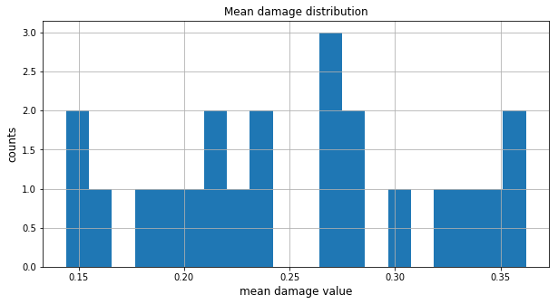

7.1. Seaside testbed¶
[1]:
from pyincore import IncoreClient
from pyincore.analyses.buildingdamage import BuildingDamage
[2]:
client = IncoreClient()
[4]:
# New madrid earthquake using Atkinson Boore 1995
hazard_type = "earthquake"
hazard_id = "5b902cb273c3371e1236b36b"
# Building damage ratios
dmg_ratio_id = "5a284f2ec7d30d13bc08209a"
[5]:
# Building dataset
bldg_dataset_id = "5a284f0bc7d30d13bc081a28"
[6]:
# Earthquake mapping
mapping_id = "5b47b350337d4a3629076f2c"
[7]:
# Run Memphis earthquake building damage
bldg_dmg = BuildingDamage(client)
bldg_dmg.load_remote_input_dataset("buildings", bldg_dataset_id)
bldg_dmg.load_remote_input_dataset("dmg_ratios", dmg_ratio_id)
result_name = "memphis_bldg_dmg_result"
bldg_dmg.set_parameter("result_name", result_name)
bldg_dmg.set_parameter("mapping_id", mapping_id)
bldg_dmg.set_parameter("hazard_type", hazard_type)
bldg_dmg.set_parameter("hazard_id", hazard_id)
bldg_dmg.set_parameter("num_cpu", 10)
Dataset already exists locally. Reading from local cache.
Dataset already exists locally. Reading from local cache.
[7]:
True
7.1.1. Run analysis¶
[ ]:
bldg_dmg.run_analysis()
[10]:
# Display output by using Pandas DataFrame
df = bldg_dmg.get_output_dataset("result").get_dataframe_from_csv()
df.sort_values('meandamage', ascending=False).head(10)
[10]:
| guid | immocc | lifesfty | collprev | insignific | moderate | heavy | complete | meandamage | mdamagedev | hazardtype | hazardval | |
|---|---|---|---|---|---|---|---|---|---|---|---|---|
| 6 | 96eca79e-7d0f-48a6-bffd-5bfc1e094363 | 0.923827 | 0.491030 | 0.070218 | 0.076173 | 0.432797 | 0.420812 | 0.070218 | 0.362107 | 0.263111 | PGA | 0.315782 |
| 2 | 4253802e-b3e5-4ed3-93b0-dda9ef6362b0 | 0.896775 | 0.480926 | 0.087568 | 0.103225 | 0.415849 | 0.393358 | 0.087568 | 0.360131 | 0.275124 | PGA | 0.308425 |
| 14 | 1eab704b-bb56-425f-a3ad-a7b5f937554e | 0.856179 | 0.446934 | 0.094467 | 0.143821 | 0.409245 | 0.352467 | 0.094467 | 0.343029 | 0.283477 | Sa | 0.495900 |
| 11 | 1d33e811-56c4-4a56-a540-d8d90d82b5f5 | 0.880045 | 0.445909 | 0.074361 | 0.119955 | 0.434136 | 0.371548 | 0.074361 | 0.339167 | 0.270776 | PGA | 0.291682 |
| 21 | 152bc26f-839b-48db-8943-adf04efca945 | 0.891626 | 0.413496 | 0.047436 | 0.108374 | 0.478130 | 0.366060 | 0.047436 | 0.318677 | 0.253843 | PGA | 0.287643 |
| 9 | 433680c6-6269-4632-8c44-738d94d8b30c | 0.879303 | 0.388868 | 0.041463 | 0.120697 | 0.490435 | 0.347405 | 0.041463 | 0.305010 | 0.250240 | PGA | 0.279051 |
| 5 | 75fa116e-6409-434e-b326-67079b0f3c74 | 0.858405 | 0.343597 | 0.030156 | 0.141595 | 0.514808 | 0.313442 | 0.030156 | 0.280036 | 0.241058 | PGA | 0.315782 |
| 8 | 5a96f279-d125-4b15-a304-adbb65e454a7 | 0.853632 | 0.342760 | 0.031300 | 0.146368 | 0.510872 | 0.311460 | 0.031300 | 0.279390 | 0.242223 | PGA | 0.315782 |
| 3 | b185d5b6-5bc0-43a3-800a-c046017372ab | 0.810564 | 0.331283 | 0.048957 | 0.189436 | 0.479281 | 0.282327 | 0.048957 | 0.274576 | 0.256321 | PGA | 0.299533 |
| 1 | 254d1dd8-5d2f-4737-909b-59cc64ca72d4 | 0.844340 | 0.328296 | 0.028605 | 0.155660 | 0.516045 | 0.299691 | 0.028605 | 0.271340 | 0.239546 | PGA | 0.309996 |
7.1.2. Visualize¶
[12]:
ax = df['meandamage'].hist(bins=20, figsize=[10,5])
ax.set_title("Mean damage distribution", fontsize=12)
ax.set_xlabel("mean damage value", fontsize=12)
ax.set_ylabel("counts", fontsize=12)
[12]:
Text(0, 0.5, 'counts')

[ ]: